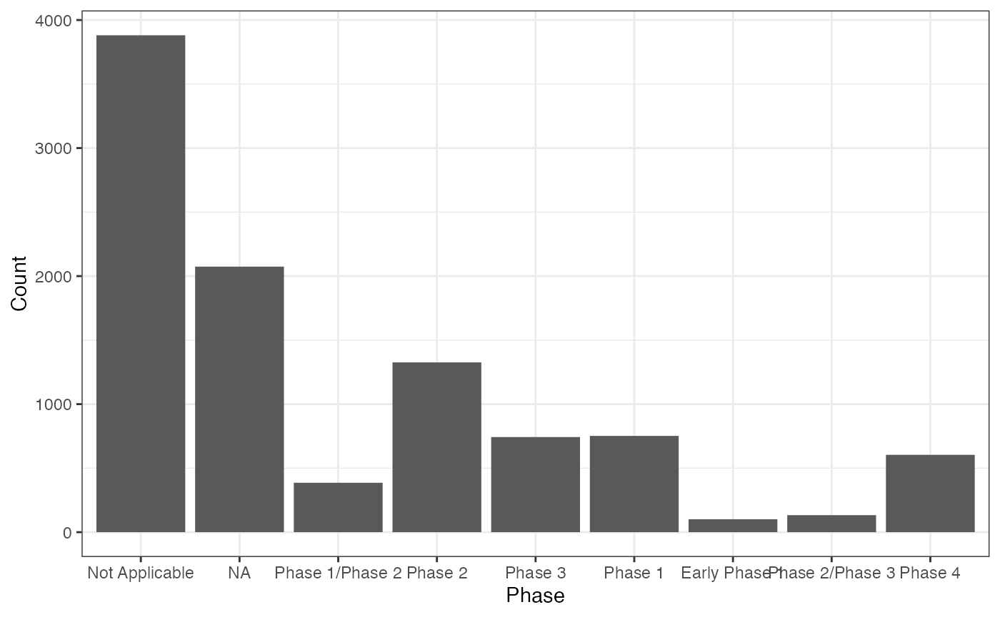

shiny-app-plots-demo
shiny-app-plots-demo.Rmd
library(bis620.2023)
library(lubridate)
#>
#> Attaching package: 'lubridate'
#> The following objects are masked from 'package:base':
#>
#> date, intersect, setdiff, union
library(dplyr)
#>
#> Attaching package: 'dplyr'
#> The following objects are masked from 'package:stats':
#>
#> filter, lag
#> The following objects are masked from 'package:base':
#>
#> intersect, setdiff, setequal, union
library(ggplot2)
library(purrr)
library(tidyr)
library(gridExtra)
#> Warning: package 'gridExtra' was built under R version 4.3.2
#>
#> Attaching package: 'gridExtra'
#> The following object is masked from 'package:dplyr':
#>
#> combine
library(knitr)
library(rmarkdown)
library(maps)
#> Warning: package 'maps' was built under R version 4.3.2
#>
#> Attaching package: 'maps'
#> The following object is masked from 'package:purrr':
#>
#> map
library(utils)
data("studies")
data("countries")
data("documents")
data("interventions")
data("designs")
plot_countries_map(studies)#> TableGrob (1 x 2) "arrange": 2 grobs
#> z cells name grob
#> 1 1 (1-1,1-1) arrange gtable[layout]
#> 2 2 (1-1,2-2) arrange gtable[layout]
plot_document_histogram_pie(studies)
plot_interventions_histogram(studies)
x_axis <- get_distinct(studies, "phase")
plot_histogram_uniform_x_axis(studies, "phase", x_axis, "Phase")
query_tbl <- studies |> left_join(designs, by = "nct_id")
x_axis <- get_distinct(designs, "model_flg")
plot_histogram_uniform_x_axis(query_tbl, "model_flg", x_axis, "Model")